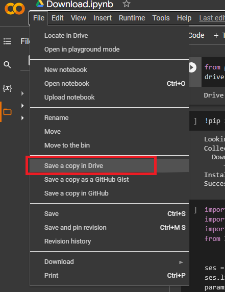
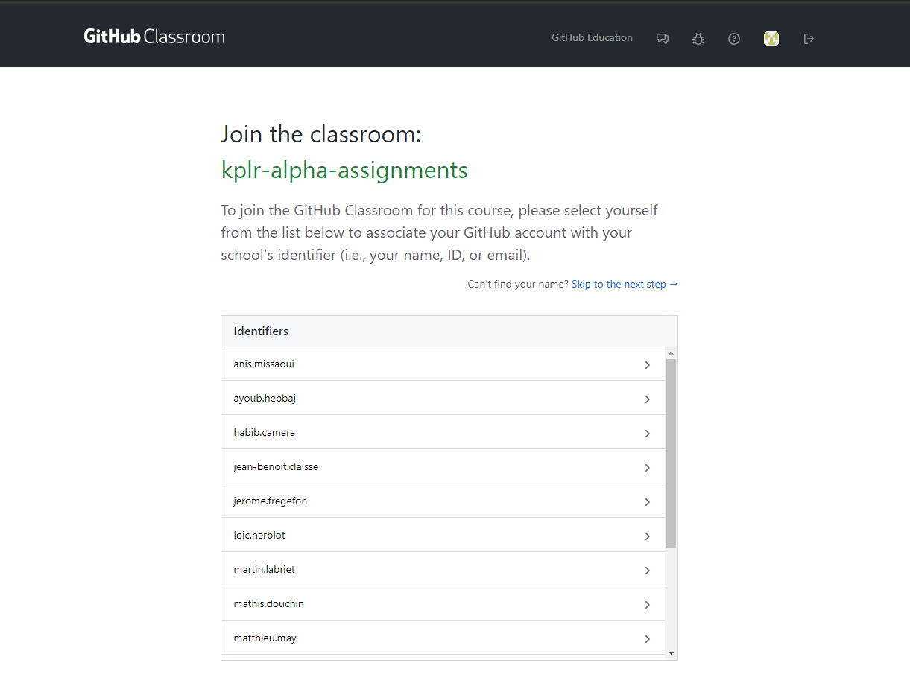
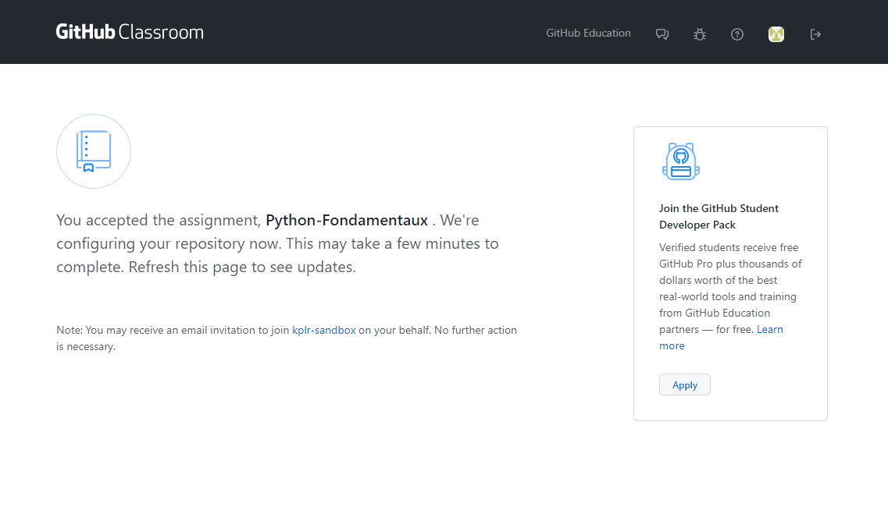
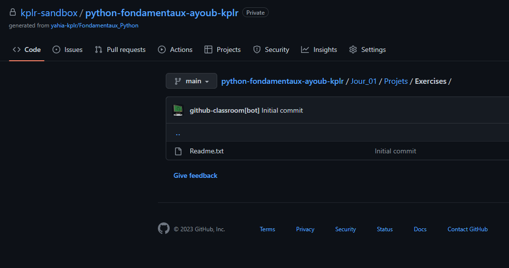
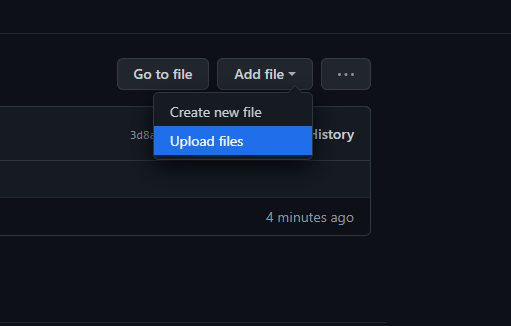
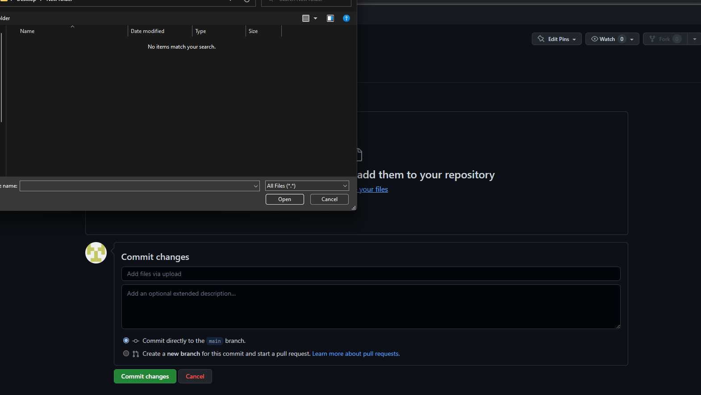

Apres avoir telecharger les Markdowns,
Acceder au lien https://classroom.github.com/a/gej_rcJx

Et choisissez vos nom.
Il faut accepter le devoir
Vous allez avoir cette page

Il faut passionter quelque minutes, le temp que vos compte soit créer.
Apres queleque instants, actualiser la page

Vous allez voir un lien de devoir github
Vous cliquez sur le lien
Vous accedez au jour du notebook, puis vous cliquez

Vous cliquez sur "Add file", puis Upload files. Et vous uploadez les notebook.

Vous cliquez sur "Choose your files", et vous selectionnez les notebooks à uploader.

Et finalement, vous cliquez sur "Commit changes"